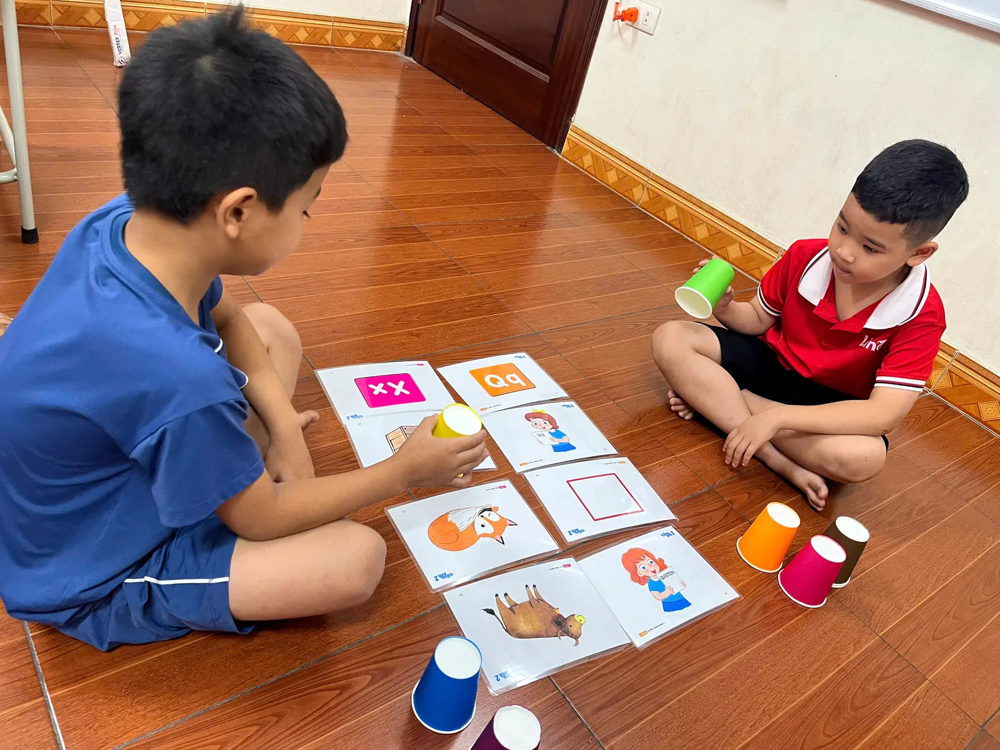
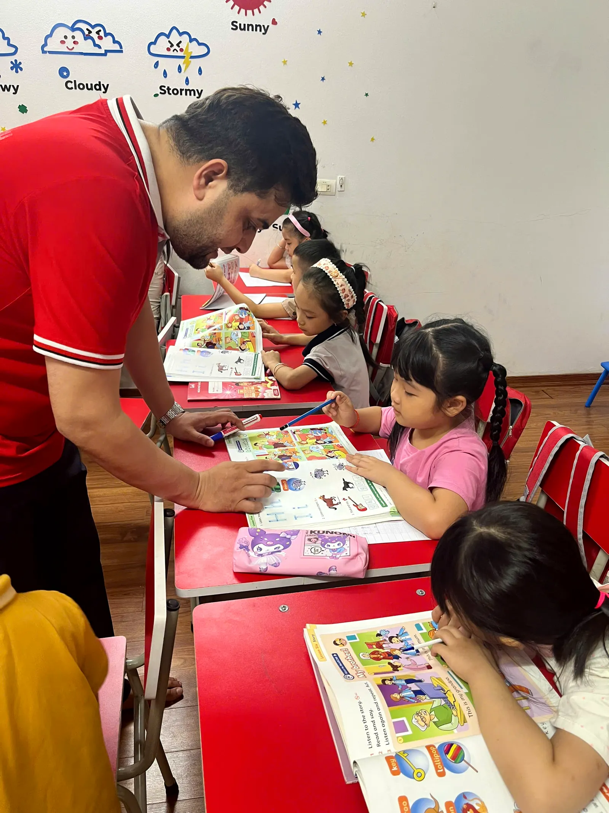
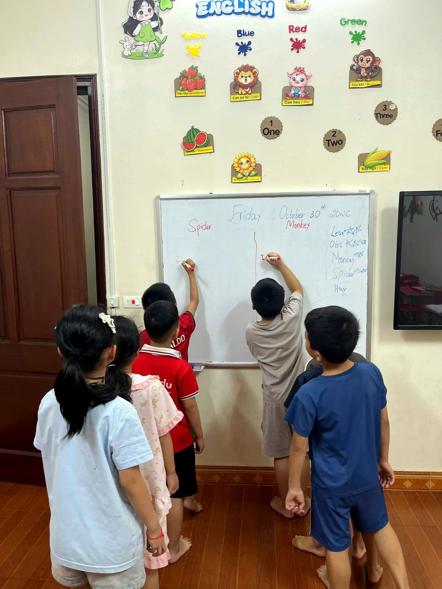
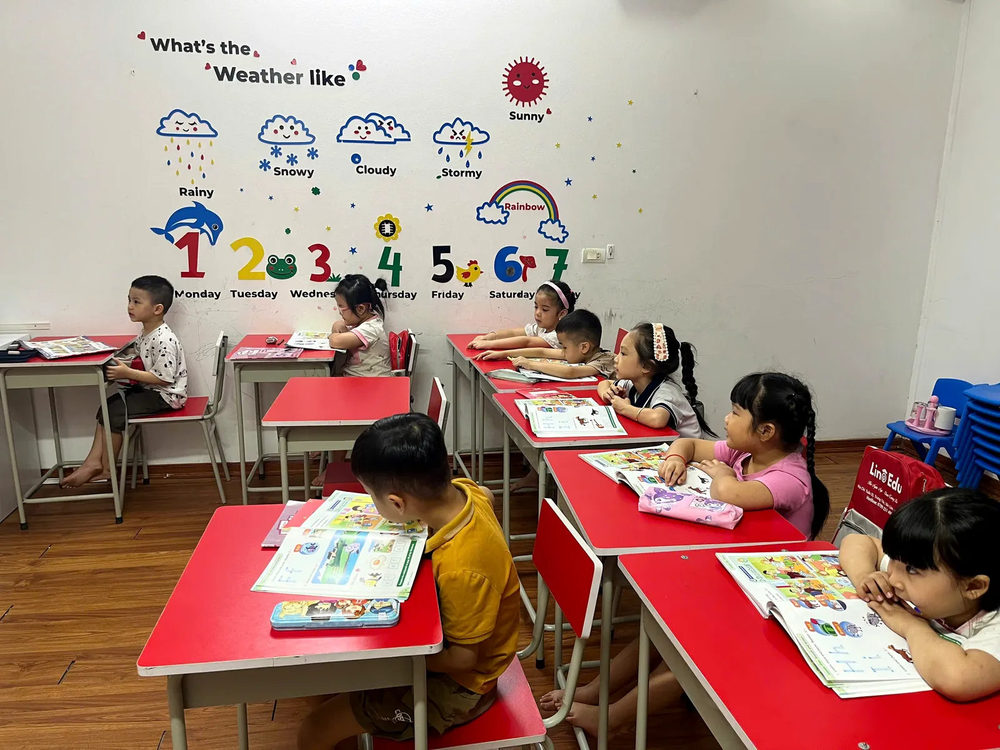

N5
はじめまして。
Rất vui được gặp bạn.
Bảng chữ, lời chào, những câu đầu tiên.
Tiếng Anh cho trẻ 3 đến 15 tuổi theo Jolly Phonics. Tiếng Nhật N5 đến N3 cho học sinh và người đi làm.
Gần ngã tư Tài Chính, Như Quỳnh, Hưng Yên
Một âm thành một từ. Một từ thành một câu.
Hôm nay, con mới biết một âm.
Mười hai năm nữa thì sao?
ai
3 tuổi. Con nghe, nhìn thẻ và bắt chước một âm.
r·ai·n
5 tuổi. Con ghép âm thành từ theo Jolly Phonics.
It’s raining on the train.
8 tuổi. Con đọc trọn câu, luyện nói với giáo viên nước ngoài.
I stayed in and painted because it rained all day.
11 tuổi. Con kể chuyện của mình, phát âm rõ, vững bài trên lớp.
I’m not afraid to explain what I think.
15 tuổi. Con tự nói điều con nghĩ, sẵn nền tảng cho kỳ thi Cambridge.
Lộ trình minh hoạ. Mỗi bé có nhịp riêng.

Jolly Phonics dạy con nghe âm, ghép âm, rồi tự đọc. Thẻ từ, cốc màu và những ván chơi trên sàn lớp làm phần còn lại.
Con luyện phát âm và luyện nói trực tiếp với giáo viên nước ngoài ngay trong buổi học, rồi lên bảng tự viết, tự nói.



Tám đoạn video quay ngay trong lớp của Lino. Bấm vào để xem, video có tiếng.
Cho học sinh và người đi làm.
はじめまして。
Rất vui được gặp bạn.
Bảng chữ, lời chào, những câu đầu tiên.
日本語を勉強しています。
Tôi đang học tiếng Nhật.
Hội thoại hằng ngày, câu dài hơn.
日本で働きたいと思っています。
Tôi muốn làm việc ở Nhật.
Nói được điều mình muốn, đọc hiểu văn bản thường gặp.
Mỗi cấp, câu nói dài thêm một chút.
Đăng ký học thử tiếng NhậtBốn bài ngắn của giáo viên Lino về những câu người học hay dùng nhầm. Xem video, rồi đọc lại phần ghi nhớ bên cạnh.
Là “vâng” hay “không”? Cả hai.
Ghi nhớ. Nghe từ đứng trước (はい, いいえ, いや) và câu người ta vừa hỏi để biết là nhận hay từ chối.
Không sai, nhưng người Nhật ít dùng hằng ngày.
Ghi nhớ. さようなら mang sắc thái chia tay lâu dài, có khi không gặp lại. Mai còn gặp nhau thì chọn ba câu trên.
Cùng là rủ, nhưng khác sắc thái.
Ghi nhớ. Đừng nói にもつを もちませんか khi muốn giúp: câu đó thành rủ người ta xách cùng.
Nghĩa là “bạn”, nhưng gọi thẳng dễ bị hiểu lầm.
Ghi nhớ. Gọi thẳng あなた nghe lạnh lùng, xa cách, có khi như trách móc. Hạn chế dùng.
Chọn một vạch, điền hai dòng. Trang sẽ soạn sẵn tin nhắn để anh chị gửi cho Lino.